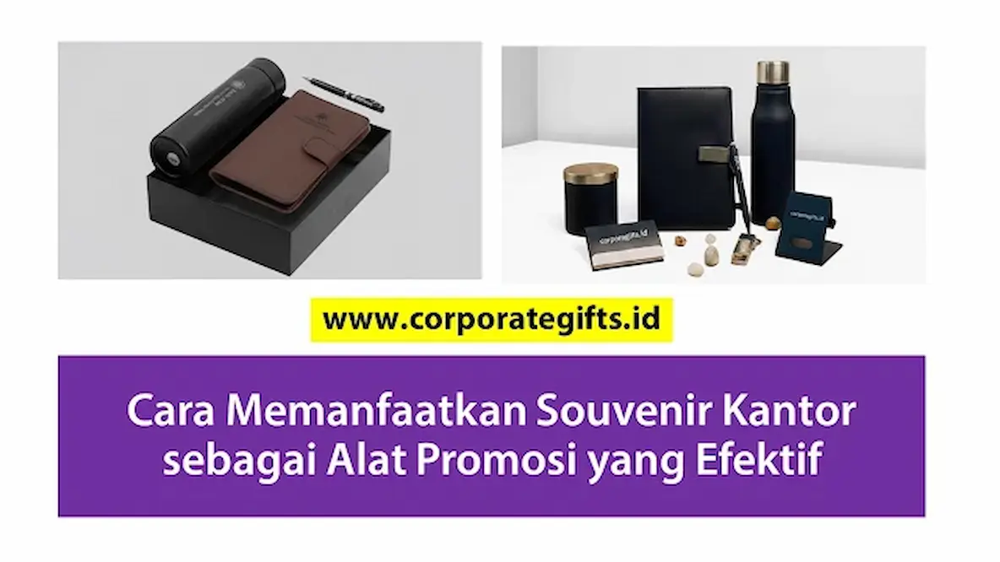

Corporate Gifts ID - Souvenir kantor adalah barang bermanfaat berlogo perusahaan yang dibagikan kepada karyawan, klien, atau mitra bisnis sebagai media branding jangka panjang. Berbeda dari iklan digital yang tayangannya terbatas, souvenir kantor terus mengingatkan penerima pada brand setiap kali digunakan, sehingga menjadi alat promosi yang efektif dan hemat biaya. Dengan pemilihan produk yang tepat, desain yang selaras dengan identitas brand, serta distribusi pada momen yang strategis, souvenir kantor dapat meningkatkan brand awareness sekaligus mempererat hubungan dengan pelanggan maupun mitra bisnis.
Poin Kunci Souvenir Kantor sebagai Alat Promosi:
- Eksposur Berkelanjutan: Memberikan impresi visual jangka panjang tanpa beban biaya iklan per klik atau per tayang yang terus berulang.
- Nilai Guna Tinggi: Membangun asosiasi brand positif karena produk digunakan secara aktif dalam rutinitas kerja harian penerima.
- Kustomisasi Elegan: Mengedepankan penempatan logo yang proporsional dan selaras dengan panduan visual identitas korporat.
- Segmentasi Strategis: Mengalokasikan jenis merchandise yang tepat sesuai tingkatan audiens (massal, profesional, hingga VIP eksekutif).
Mengapa Souvenir Kantor Efektif sebagai Media Promosi
Promosi yang Berlangsung Lama
Berbeda dengan iklan digital atau brosur kertas yang hanya dilihat sesaat lalu diabaikan, souvenir kantor custom memiliki masa pakai yang sangat panjang. Setiap kali penerima menggunakannya di meja kerja, ruang rapat, maupun saat bepergian, logo dan pesan brand Anda akan kembali terlihat. Hal ini menciptakan promosi berulang yang alami tanpa memerlukan alokasi anggaran tambahan di masa mendatang.
Memberikan Nilai Tambah bagi Penerima
Souvenir kantor yang fungsional seperti tumbler stainless SUS 304 atau notebook agenda kerja menciptakan kesan positif yang mendalam. Penerima tidak hanya mengingat brand Anda, tetapi juga merasa terbantu dalam menyelesaikan tugas harian mereka. Nilai guna nyata inilah yang membuat merchandise fisik jauh lebih unggul dan bermakna dibanding media promosi konvensional.

Paket gift set kantor elegan dengan tumbler termal, agenda kulit deboss, dan pulpen metal untuk meningkatkan citra profesional perusahaan.
Strategi Memanfaatkan Souvenir Kantor sebagai Alat Promosi
1. Pilih Produk yang Relevan dengan Audiens
Sesuaikan jenis souvenir dengan karakteristik dan kebutuhan target audiens Anda. Perangkat fungsional seperti power bank, flashdisk kartu, atau desk organizer sangat cocok untuk segmen profesional kantor, sementara tote bag kanvas dan botol minum ramah lingkungan lebih sesuai untuk kegiatan promosi massal kepada pelanggan umum.
2. Gunakan Desain yang Selaras dengan Identitas Brand
Pemilihan warna dasar, proporsi logo, serta tipografi pada souvenir harus memperkuat citra kredibilitas perusahaan. Desain yang minimalis, modern, dan tidak terlalu mencolok justru akan meningkatkan kesan eksklusif sehingga penerima merasa bangga membawanya ke mana pun.
3. Sesuaikan Momentum dan Konteks Distribusi
Pilihlah momen penyerahan yang tepat seperti saat peluncuran produk baru, pameran expo B2B, rapat tahunan (kickoff meeting), seminar industri, atau program CSR agar souvenir menjangkau pihak-pihak yang paling relevan dengan sasaran bisnis Anda.
4. Batasi Produksi untuk Kesan Eksklusif
Memproduksi paket hampers dan gift set eksekutif dalam jumlah terbatas (limited edition) memberikan prestise tersendiri bagi penerimanya. Souvenir eksklusif terbukti disimpan lebih lama dan diposisikan sebagai cinderamata berharga oleh para mitra bisnis terkemuka.
Contoh Implementasi Souvenir Kantor untuk Promosi
Berikut beberapa skenario penerapan souvenir korporat yang telah terbukti menghasilkan dampak promosi optimal:
- Pameran dan Expo Bisnis: Bagikan tote bag kanvas custom yang memuat katalog cetak, blocknote, dan pulpen logo untuk memudahkan pengunjung membawa materi pameran Anda.
- Peluncuran Produk Baru (Product Launching): Berikan merchandise teknologi pintar yang selaras dengan fitur inovatif produk yang sedang dirilis ke pasar.
- Program Loyalitas Klien VIP: Hadiahkan paket executive gift set berlapis kulit mewah kepada klien setia sebagai bentuk apresiasi atas kemitraan jangka panjang.
- Kegiatan CSR dan Edukasi Publik: Sediakan perlengkapan ramah lingkungan seperti sedotan stainless dan tumbler bambu yang memuat pesan kampanye keberlanjutan sosial (ESG).
Tabel Matriks Implementasi Souvenir Kantor Promosi
Rangkuman panduan alokasi souvenir kantor berdasarkan momentum kegiatan promosi perusahaan:
| Momentum Acara | Rekomendasi Produk | Target Audiens | Tujuan Branding |
|---|---|---|---|
| Pameran Bisnis / Expo | Tote Bag Kanvas, Lanyard, Pulpen Grafir | Pengunjung umum & calon prospek | Memperluas jangkauan awareness & database leads |
| Peluncuran Produk Baru | Smart Tumbler LED, Flashdisk Kartu Custom | Media, influencer & mitra distributor | Menciptakan kesan inovatif & publisitas positif |
| Apresiasi Loyalitas Klien | Executive Gift Set Box, Agenda Kulit Deboss | Klien VIP & stakeholder utama | Mempererat retensi hubungan bisnis jangka panjang |
| Kegiatan CSR & Sustainability | Eco Cutlery Set Bambu, Reusable Bag Organik | Komunitas lokal & publik umum | Menegaskan komitmen perusahaan terhadap nilai ESG |
Dampak Positif Souvenir Kantor terhadap Branding dan Awareness
Souvenir kantor membantu brand Anda hadir secara konsisten di hadapan audiens dalam konteks yang positif dan menyenangkan. Setiap kali merchandise tersebut digunakan dalam aktivitas rutin, citra profesional brand semakin melekat kuat di alam bawah sadar penerima. Strategi ini secara signifikan memangkas biaya pemasaran jangka panjang sekaligus meningkatkan loyalitas pemangku kepentingan.
Kesimpulan
Souvenir kantor bukan sekadar hadiah seremonial, melainkan investasi branding terukur yang sangat efektif jika dikelola dengan perencanaan yang matang. Pemilihan produk yang relevan, konsistensi desain grafis berlogo, serta ketepatan momentum distribusi akan membuat souvenir kantor bekerja maksimal dalam meningkatkan brand awareness dan mempererat kemitraan bisnis.
Konsultasikan kebutuhan merchandise promosi Anda bersama CorporateGifts.ID. Kami menyediakan aneka pilihan paket souvenir promosi berkualitas dengan jaminan pengerjaan tepat waktu dan bantuan desain mockup gratis.